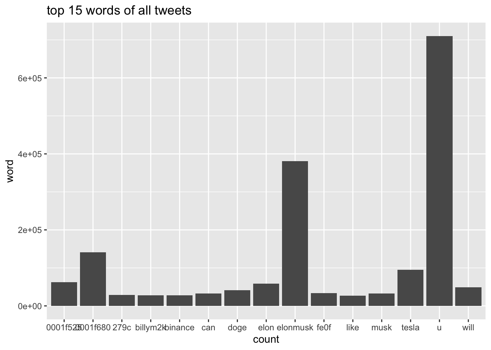
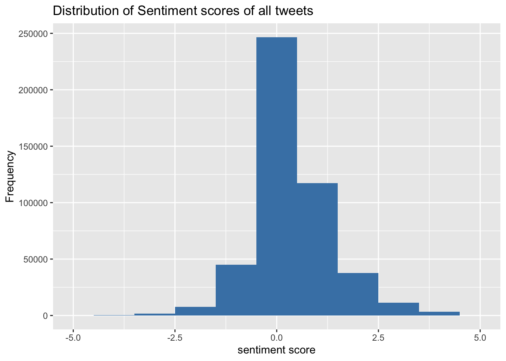
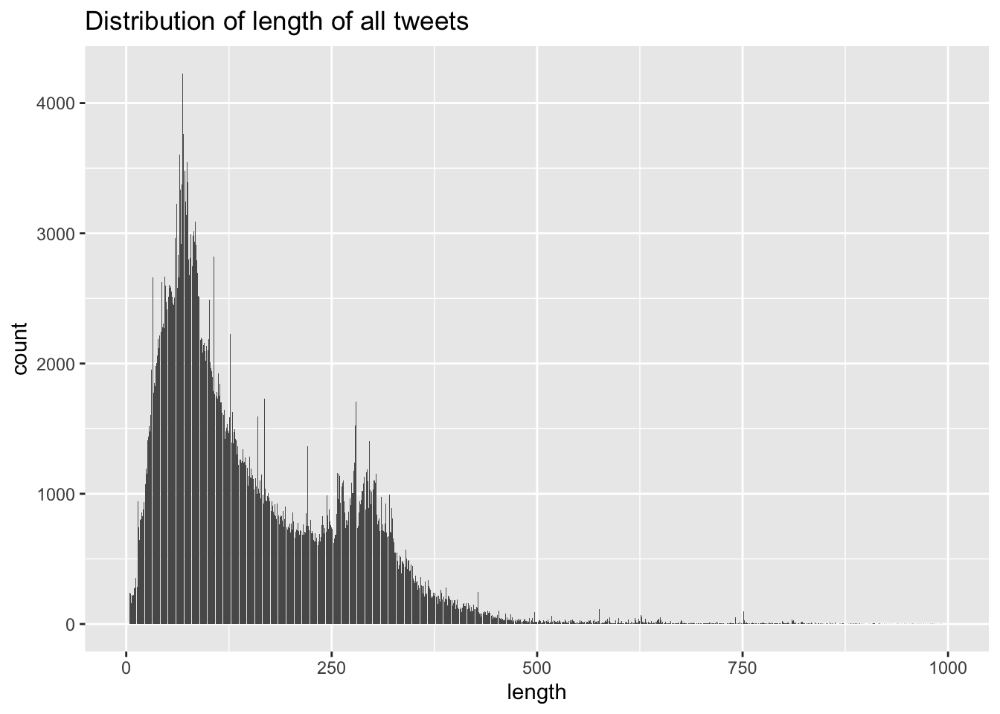

Chapter 5 Results
5.1 Elon Musk
Elon Musk is very active on twitter and anything he tweets can be very influential and brings a lot of controversies. For example, his tweet about the crypto-currency “dogecoin” caused “dogecoin” price to spike. Since Twitter users have many discussions surrounding him, our analysis aims to visualize those discussions.
The period of which we collected our data was very interesting. It was shortly after Tesla flied in stock market and Elon Musk became the richest man in the world. He was also asked by the United Nation to donate 4% of his growing wealth to solve a hunger crisis. Just shortly after that, on Nov. 1st, he posted a Chinese poem “七步诗” titled as “Humankind”.

5.2 Volume of tweets
We first carried out analysis on the number of tweets that we collected each day. Due to some technical issues, the durations we collected tweets each day are different. They were about 10-12 hours each day, with one excepetion on Oct 29. On that day, we collected tweets for about 5.5 hours. In order to present a consistent results through the period, we standardize the tweets by dividing the total collected hour and multiplying by 24. The following graph presents expected number of tweets each day.

From the graph, we see that the volume each day can be as low as 70 thousands and as high as 250 thousands. There were two peaks on Oct. 29th and Nov 1st. For the first peak, we corresponded it to the drastic increase in Tesla’s stock price. For the second peak, we related to the conversation between an United Nation offical and Elon Musk. We notice from below that this conversation has 337.5 thousand likes, showing its tremendous volume of attention. Observing these patterns, we conclude that controversial events associated with Elon Musk will cause an increase in discussion on Twitter.

5.3 Geological Distribution
Even though we have limited data on geological information of users, we still want to make use of them to explore some patterns. In total we have 5293 tweets that contain a user geological information. The location is not limited to the United States, and we conducted filtering for each states.

From the state graph, we can see that users mainly locate in four states. They are California, Texas, Florida, and New York, with 503, 336, 248, and 187 users respectively. Even though we have a fairly small sample, it still seems that users in more economically developed state tend to discuss more related to Elon Musk.
5.4 Tweet Contents
5.4.1 Tweet Sentiment
Now, our analysis dive into the tweet-level. We are concerned with the contents of the tweets. Even though it is impossible for us to examine tweet by tweet, we use powerful Natural Language Processing techniques to explore patterns.
We try to identify the emotion of tweets using sentiment analysis. Each tweet will be tagged a sentiment score.





5.4.2 Monitoring Topics
After the exploration of sentiments, we want to further know what specific topics users favor to discuss. To to this, we apply topic modeling(LDA) to find underlying topics. The link leads to an interactive LDA result.